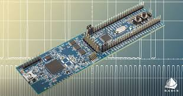

The main objectives of the second week of the embedded systems training program were to:
Key learning outcomes from Week 2:
we focused on the basics of C programming, including data types, variables, and simple control structures.the following are some of the key concepts covered:
We learned about different data types in C, such as int, float, char, and how to declare and use variables to store data.
We practiced using control structures like if-else statements and loops (for, while) to create simple programs that can make decisions and repeat tasks.
the week2 assignment involved writing a simple C program for students management using structs and unions also malloc for memory allocation. the following is the code for the week2 assignment:
#include
#include
#include
/* ===== ENUM ===== */
typedef enum {
UNDERGRADUATE,
POSTGRADUATE
} ProgramType;
/* ===== UNION ===== */
typedef union {
float cgpa;
char researchTopic[100];
} AcademicInfo;
/* ===== STRUCT ===== */
typedef struct {
char name[50];
int age;
ProgramType program;
AcademicInfo academicInfo;
} Student;
/* ===== MAIN FUNCTION ===== */
int main() {
int n;
printf("Enter the number of students: ");
scanf("%d", &n);
/* Allocate memory */
Student *students = (Student *)malloc(n * sizeof(Student));
/* Check if malloc worked */
if (students == NULL) {
printf("Memory allocation failed!\n");
return 1;
}
/* ===== INPUT ===== */
for (int i = 0; i < n; i++) {
printf("\nStudent %d:\n", i + 1);
printf("Enter name: ");
scanf("%s", students[i].name);
printf("Enter age: ");
scanf("%d", &students[i].age);
int prog;
printf("Enter program (0 = Undergraduate, 1 = Postgraduate): ");
scanf("%d", &prog);
students[i].program = (ProgramType)prog;
if (students[i].program == UNDERGRADUATE) {
printf("Enter CGPA: ");
scanf("%f", &students[i].academicInfo.cgpa);
} else {
printf("Enter Research Topic: ");
scanf("%s", students[i].academicInfo.researchTopic);
}
}
/* ===== OUTPUT ===== */
printf("\n--- Student Details ---\n");
for (int i = 0; i < n; i++) {
printf("\nStudent %d:\n", i + 1);
printf("Name: %s\n", students[i].name);
printf("Age: %d\n", students[i].age);
if (students[i].program == UNDERGRADUATE) {
printf("Program: Undergraduate\n");
printf("CGPA: %.2f\n", students[i].academicInfo.cgpa);
} else {
printf("Program: Postgraduate\n");
printf("Research Topic: %s\n", students[i].academicInfo.researchTopic);
}
}
/* Free memory */
free(students);
return 0;
}
In conclusion, Week 2 of the embedded systems training program provided a solid foundation in C programming, covering essential concepts such as data types, variables, control structures, and memory management. The hands-on assignment allowed students to apply their knowledge in a practical way, reinforcing their understanding of C programming concepts. This week set the stage for more advanced topics in embedded systems development in the upcoming weeks.
